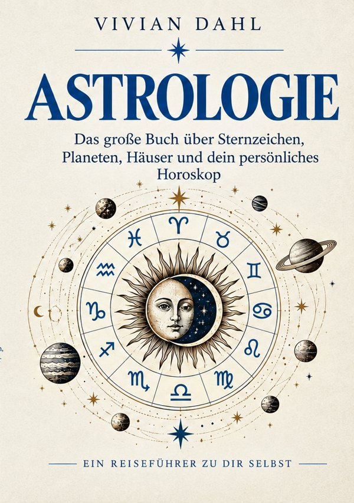

Astrologie
Das große Buch über Sternzeichen, Planeten, Häuser und dein persönliches Horoskop
Du bist mehr als dein Sternzeichen. Dein Geburtshoroskop ist ein Fingerabdruck des Himmels. Dieses Buch zeigt Schritt für Schritt, wie Sternzeichen, Planeten und Häuser zusammenspielen, verständlich und ohne Vorwissen.
ISBN 978-3-565752-27-0